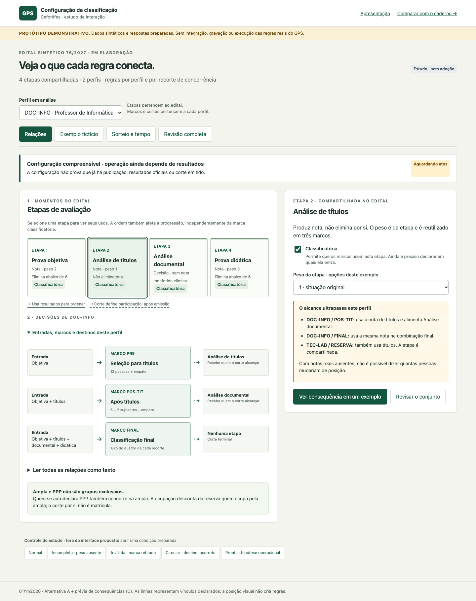
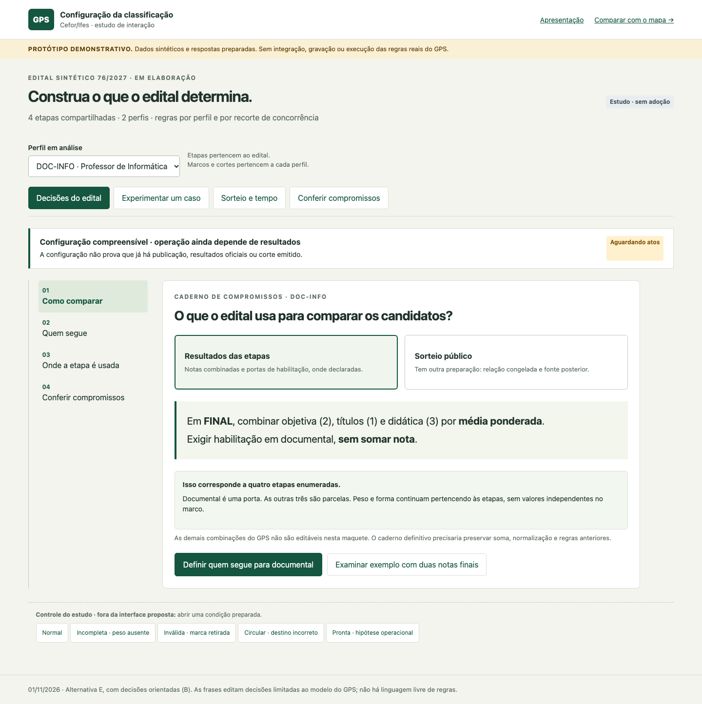
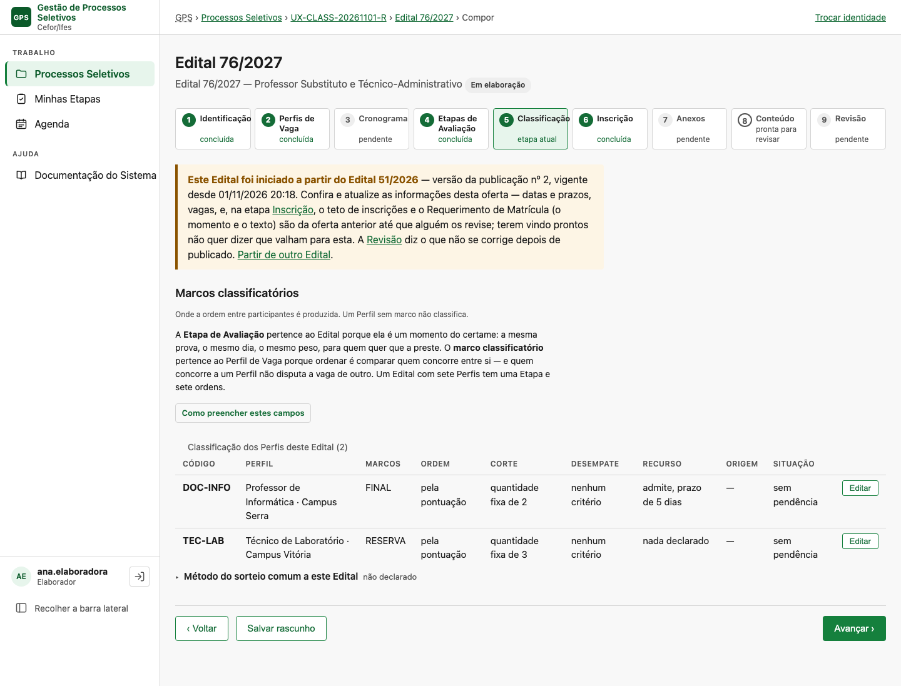
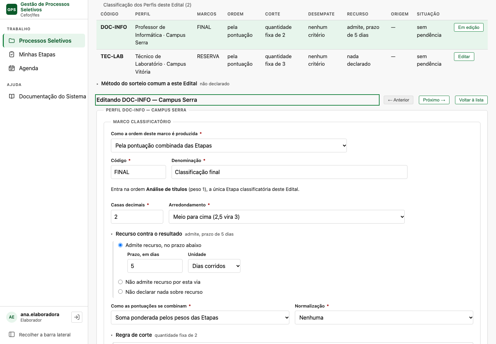
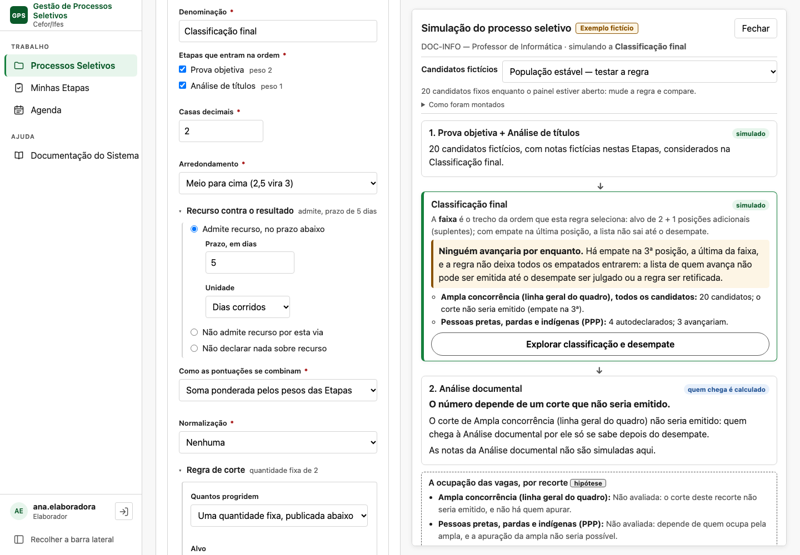
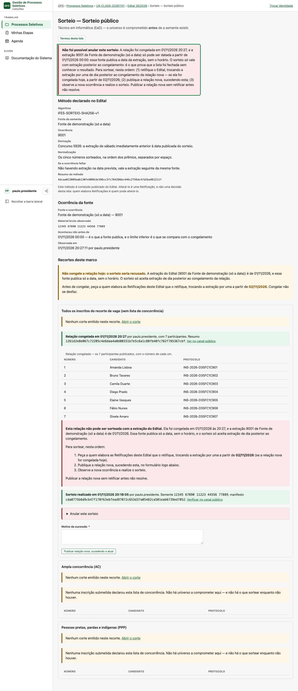

O GPS aceita em silêncio o que contraria o edital.
Configurando do zero pela interface, houve uma recusa em nove salvamentos e três configurações erradas aceitas sem aviso. O texto que o documento publica e a jornada do certame já existem no GPS, mas longe da decisão. A aposta: configurar sobre o trilho, com o texto publicado ao lado.
Da etapa isolada à decisão que ela sustenta.
Uma etapa produz nota ou decisão. Um marco produz a ordem. Um corte determina quem será analisado depois. A experiência precisa mostrar essas relações enquanto o operador decide.
Compare a relação visível com o compromisso do edital.
Ambas usam quatro etapas compartilhadas, três marcos em DOC-INFO e outro marco em TEC-LAB. A lógica inclui nota, porta decisória, dois cortes que alimentam etapas, corte terminal e recortes sobrepostos.
Mapa assistido
Selecione uma etapa e veja quem a usa. Inspecione o marco e o destino do corte. Uma mudança mostra o alcance entre perfis.

Abrir protótipo →Caderno de compromissos
Comece pela intenção do edital. Construa enunciados limitados ao modelo e confira quais compromissos mudam antes de confirmar.

Abrir protótipo →Procure explicar o que mudará, antes de confirmar.
- No mapa, selecione Análise documental. Ela soma nota? Qual corte decide quem chega?
- Selecione Títulos e retire a marca classificatória. Identifique os três marcos afetados e restaure a marca.
- No caderno, abra Quem segue. Escolha títulos como destino de POS-TIT. Explique a circularidade e corrija para documental.
- Abra o exemplo e altere o peso de títulos. Veja a comparação preparada para a dupla; ela não prevê o certame inteiro.
- Abra Sorteio e tempo. Compare o limite da fonte com o congelamento; esperar até a noite resolve?
- Revise o conjunto. Distinga configuração coerente de operação pronta e os atos que ainda faltam.
Os controles no rodapé abrem estados preparados para pesquisa. A maquete não grava rascunhos nem constitui atos.
A interface atual já oferece proteção — e ainda exige reconciliação.








As imagens são capturas efetivas do Chromium. As anotações são as legendas acima, sem alteração dos pixels da aplicação. Ver também o sucessor constituído com fonte horária posterior.

Um mapa não deve tentar explicar tudo.
Estrutura e mudança
Relações tipadas para entradas e destino. Frases curtas para efeito. Antes/depois para o alcance em vários marcos e perfis.
Mapa do domínio e limitesTempo e exemplo
Comparação temporal para o compromisso do sorteio. Tabela e trajetória causal para os candidatos fictícios, por solicitação explícita.
Ver proposta temporal →Mapa com consequências e conferência de alcance.
A + D é a principal candidata para manutenção. E é uma contraproposta para primeira elaboração e revisão. A escolha depende de tarefas com operadores; aparência não demonstra compreensão.
Preservar o domínio e os simuladores atuais. Começar por consumidores, referências inválidas visíveis e instantes do sorteio. Nenhum motor ou workflow novo é necessário.
Plano incremental e critérios de aceite →Todos os artefatos
- Diagnóstico e conceitos · Cinco jornadas
- Dependências classificatórias, operacionais e temporais
- Cinco alternativas e referências externas
- Validações, interpretação determinística e impacto
- Matriz, tarefas, gabaritos e autocrítica
- Arquitetura, acessibilidade e evolução
- Código, capturas e achados · Verificação
417 testes selecionados passaram contra PostgreSQL; lint e checks do Django passaram. Protótipos verificados em Chromium. Isso comprova verificações técnicas, sem validar a hipótese de UX com usuários.